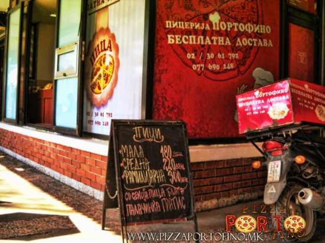
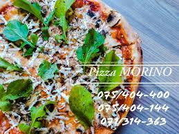
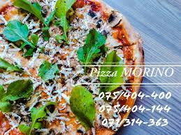
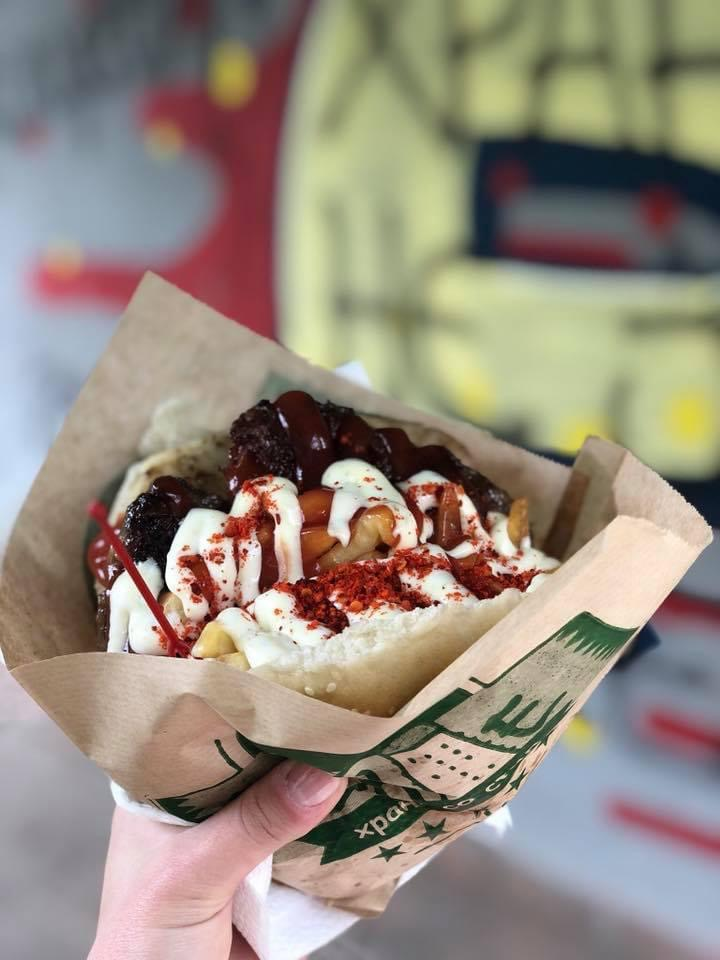
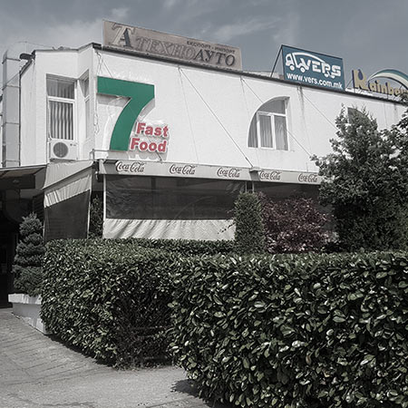
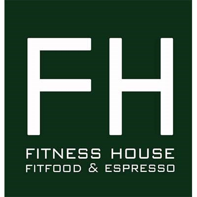

Најдобрите пици во Скопје
Jul 14, 2022
 

Ова се најдобрите места за пица во градот. Кое било од овие места и да изберете кога ќе ви се јаде пица, со сигурност нема да згрешите!
Пицата е омилена во светот. Причината за ширењето на пицата е тоа што можете да и додадете што било и да го јадете во секое време од денот и каде било. Пицата потекнува од Италија и е една од омилените намирници за возрасни и деца. Првично било тесто со прелив од какви било состојки како месо или зеленчук што се печеле во рерна. Пицата се развила во поорганизирана бидејќи Италијанците додадоа сос, сирење моцарела и многу други видови сирење. Таков нов начин се пресели од Италија во други земји од италијански имигранти.
Најдобрите бургери во градот
Jul 13, 2022
 
Во моменти кога брзаме, хамбургерите се една од најлесните намирници за јадење додека сте во движење. Без разлика во кое време е дали е појадок, ручек или вечера, ние земаме хамбургер и може да фрлиме малку помфрит и газиран пијалок за да одиме со него. Многу ресторани се познати по тоа што своите хамбургери ги прават на специфичен начин. Подготовката се разликува од ресторан до ресторан. Но, што навистина го прави вкусот на хамбургерот толку вкусен? Во зависност од тоа каде одите, тие ќе имаат различен вкус, но сите се исто структурирани. Се состои од пунџа, мелено месо и често состојки како сирење, парчиња кромид, зелена салата и други зачини. Повремено сакам да купувам сочни хамбургери кои изгледаат и имаат одличен вкус. Кога вашата храна се служи, не само што мора да има добар вкус, туку и да изгледа добро за да биде апетитна. Хамбургерите, без сомнение, изгледаат многу вкусно. Доколку сте расположени за некој сочен бургер би ви ги препорачала 7ца, Киоск и Baking bread.
Поздрава опција
Jul 12, 2022
Јадењето здраво е за рамнотежа и обезбедување дека вашето тело ги добива потребните хранливи материи што му се потребни за правилно функционирање. Здравите навики во исхраната бараат луѓето да јадат овошје, зеленчук, цели зрна, масти, протеини и скроб. Имајте на ум дека здравата исхрана бара да внимавате што јадете и пиете, но и како го подготвувате. За најдобри резултати, поединците треба да избегнуваат пржена или преработена храна, како и храна богата со додадени шеќери и соли. Дефинитивно Fitness House е вистинскиот избор за здрава храна во Скопје. Пријатна атмосфера, добра услуга, и најважно од се, голем избор на храна, здрава храна во секаков облик. Од доручек, до ручек и вечера, и секако здрави но превкусни десерти кои мора да ги пробате!

Ова се неколку текстови што мислам дека се баш интересни и вреди да се прочитаат. Се надевам ќе ви се допаднат.